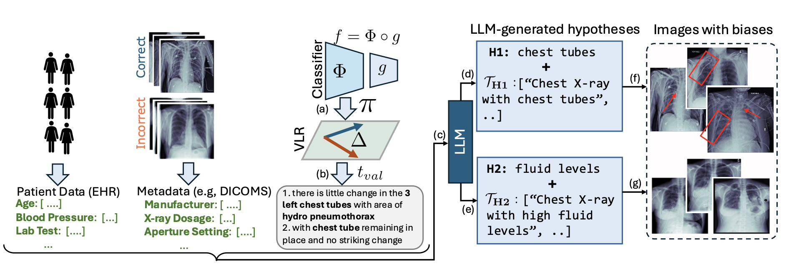
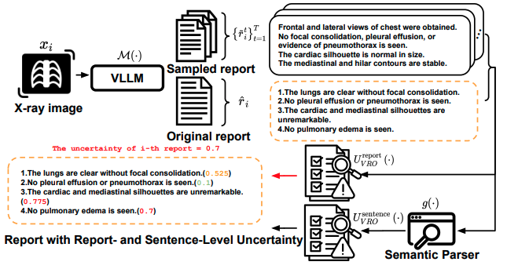
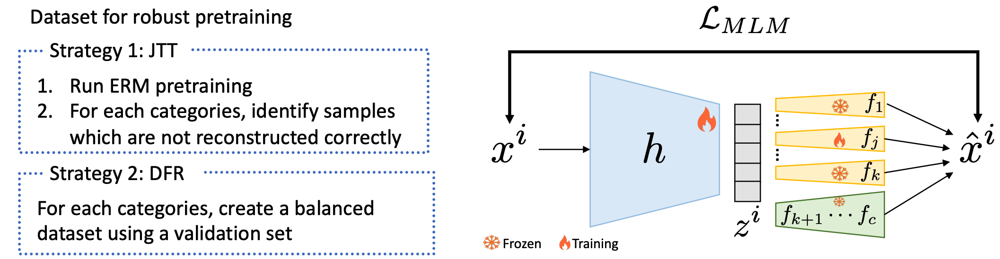
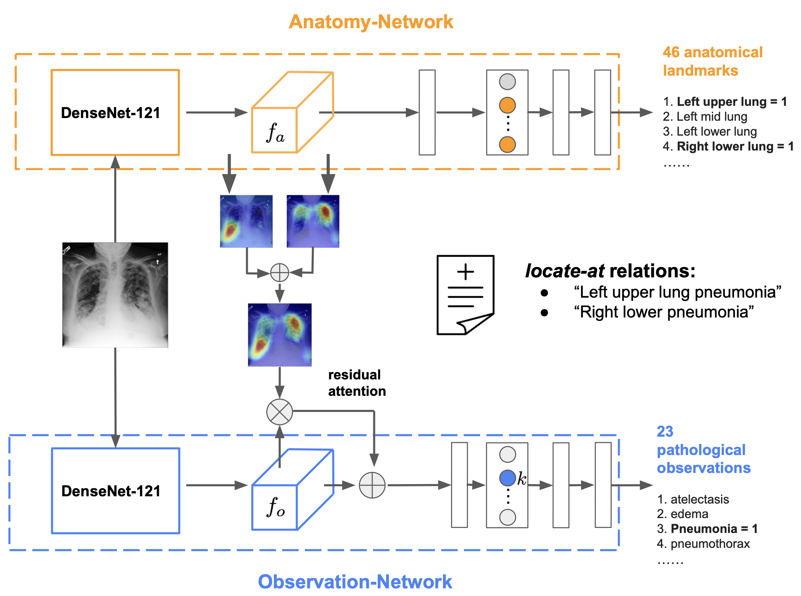
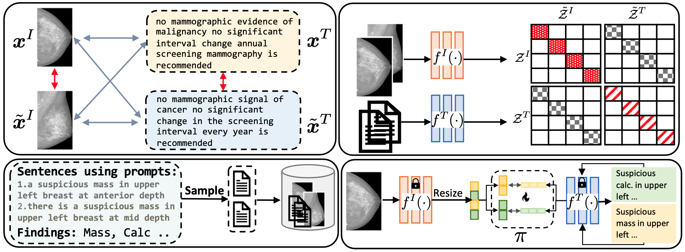
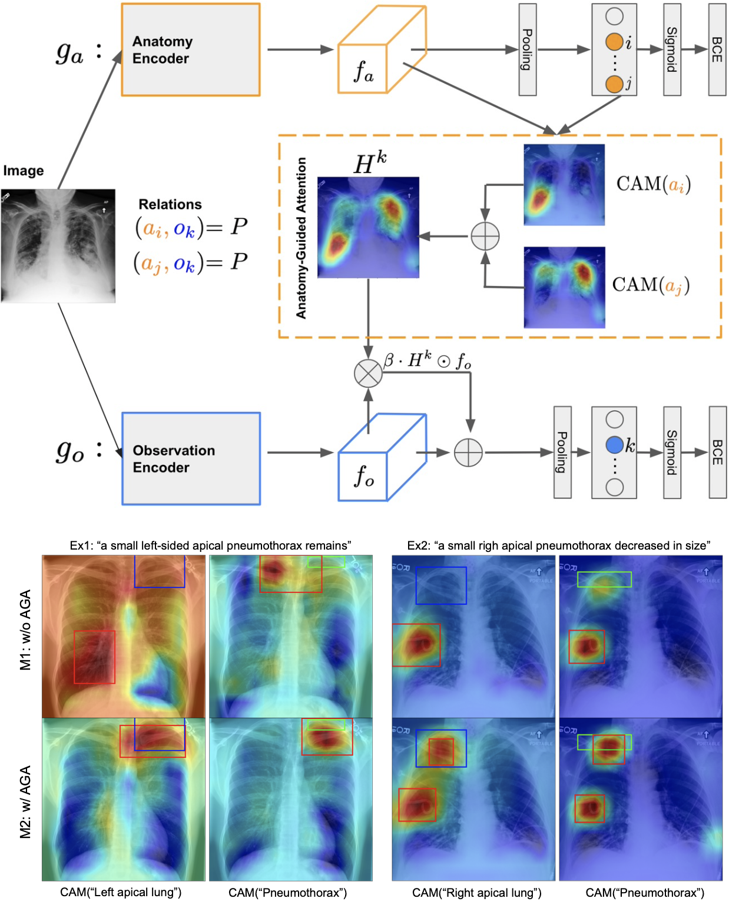
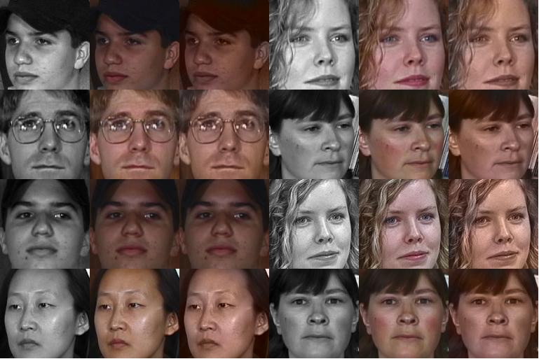
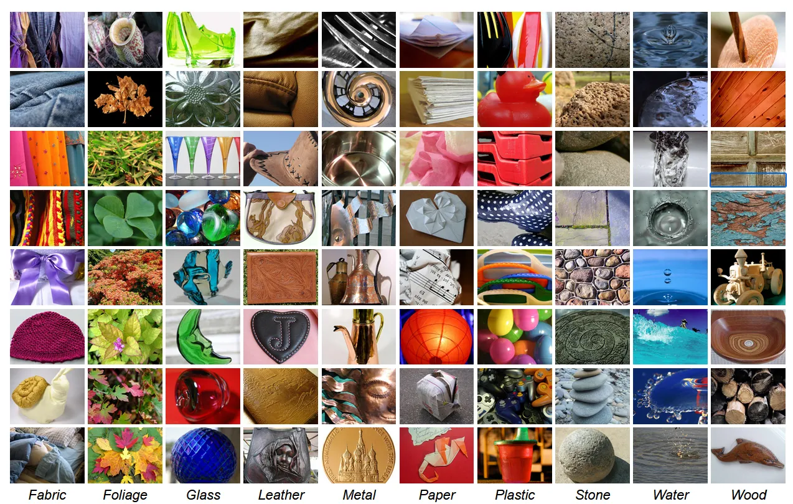
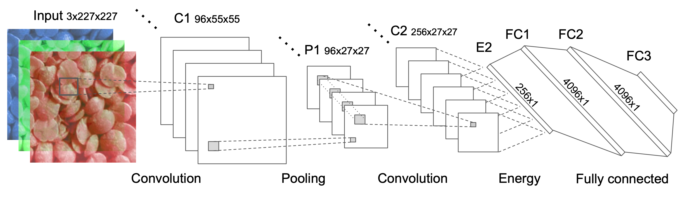
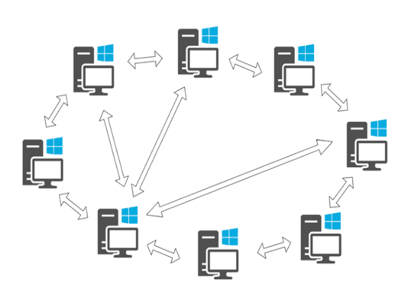

Department of Electrical and Computer Engineering, Boston University
407-07, Photonics Center, 8 St Mary's St, Boston, MA 02215
shawn24 [at] bu [dot] edu
Pic courtesy: My wife, Payel Basak
I am a lifelong proud gator and a Ph.D. candidate in Electrical Engineering at Boston University, advised by Prof. Kayhan Batmanghelich at Batman Lab. I collaborate closely with Dr. Clare B. Poynton from Boston University Medical Campus. Before our lab moved to Boston, I was a Ph.D. student in the Intelligent Systems Program (ISP) at the University of Pittsburgh. While at Pitt, I used to collaborate closely with Dr. Forough Arabshahi from Meta, Inc. At Pitt, I was also a cross-registered student at Carnegie Mellon University, where I registered for the courses Foundations of Causation and Machine Learning (PHI 80625) and Visual Learning and Recognition (RI 16-824). My current research interest lies in robustness and generalization by leveraging vision language representations to understand, explain and audit any pre-trained deep neural network. I believe that understanding a deep model's behavior is essential to mitigating bias and engendering trust in AI. During the summer of 2024, I worked as an Applied Scientist Intern with the AWS SAAR team at Amazon in New York City, under the guidance of Dr. Mikhail Kuznetsov. My project focused on learning robust representations to mitigate systematic errors in pre-trained self-supervised models applied to AWS logs.
Prior to that, I graduated with a Master's degree in Computer Science from the University of Florida. I was fortunate to work as a graduate assistant in Data Intelligence Systems Lab (DISL) lab under the supervision of Prof. Mattia Prosperi and Prof. Jiang Bian, where I conducted research on the intersection of deep learning and causal inference. I also worked closely with Prof. Kevin Butler as a Graduate Research Assistant at the Florida Institute of Cybersecurity (FICS) Research.
[ Google Scholar | Semantic Scholar | OpenReview | Github | LinkedIn | Twitter ]

Research
My core research interest lies in representation learning across computer vision and medical imaging,
with a particular focus on interpretability and
explainable AI. I investigate the representations learned across different modalities, architectures,
and training strategies to enhance their generalizability, robustness, and trustworthiness.
Specifically, I aim to answer the following research questions:
1. Can we decipher the failure modes of a deep model through multimodal vision-language
representations and large language models (LLMs) for improved reliability and debugging?
([LADDER (ACL 2025,Findings)]
2. Can we learn robust representations in presence of multiple biases for tabular data?
[Amazon internship work (TRL workshop@NeurIPS 2024)]
3. Can we lean robust vision-language representations with limited data efficiently and
localize disease with sentences? [Mammo-CLIP (MICCAI 2024, top 11%)]
4. Can we extract a mixture of interpretable models from the representation of a blackbox
model using human
interpretable concepts? [MoIE (ICML 2023 + SCIS@ICML 2023)]
5. Can we use robust mixture of interpretable models for data and computationally
efficient transfer learning? [MoIE-CXR
(MICCAI 2023, top 14% + IMLH@ICML 2023)]
6. Can we leverage radiology reports localizing a disease and its progression
without ground-truth bounding box annotation? [AGXNet (MICCAI 2022 + RAD: AI)]
At UF, I was interested broadly in biomedical informatics with a focus on causal inference. I developed deep learning models, namely DPN-SA (JAMIA 2021), PSSAM-GAN (CMPB-U 2021) and DR-VIDAL (AMIA 2022, oral), to compute propensity scores for the efficient estimation of individual treatment effects (ITE). For a detailed overview of my Master's research, refer to the slides available at this link.
Deep Learning Resources
My friend Kalpak Seal and I have developed a comprehensive repository where you can access a curated collection of academic lecture videos focused on machine learning, deep learning, computer vision, and natural language processing (NLP). If you're interested in contributing to this resource, feel free to collaborate with us by submitting a pull request. Whether it's adding new lecture videos or improving the existing structure, we welcome all contributions!
News
- [May 2025] Ladder is accepted at ACL 2025, Findings. Using LLM, Ladder detects the blind spots of deep learning classifiers where it makes systematic mistakes. Code is available here. I'm also joining as an Applied Scientist II Intern at Amazon Web Services AI (AWS AI) Team in Pasadena, CA under the supervision of Dr. Ankan Bansal.
- [Jan 2025] Our collaborative work to reduce hallucination for CXR report generation is accepted at NAACL 2025 Findings .
- [Oct 2024] My internship work at Amazon on representation learning on tabular data is accepted at 3rd Table Representation Learning Workshop @ NeurIPS 2024. I am also recognized as a top reviewer at NeurIPS 2024.
- [Aug 2024] Our collaborative work Anatomy-specific Progression Classification in Chest Radiographs via Weakly Supervised Learning is accepted at Radiology: Artificial Intelligence. Code and checkpoints are available here.
- [Jun 2024] I'm joining as an Applied Scientist II Intern at Amazon Web Services (AWS) Security Analytics and AI Research (SAAR) Team in New York City under the supervision of Dr. Mikhail Kuznetsov. My project aims at learning robust representations to mitigate systematic errors in self-supervised models.
- [May 2024] Mammo-CLIP is accepted (Early accept, top 11% out of 2,869 submissions) at MICCAI 2024. It is the first vision language model trained with mammogram+report pairs of real patients. Code and checkpoints are available here.
- [Oct 2023] I'm serving as a reviewer for ICLR 2024, Medical Image Analysis (MedIA) and CVPR 2024.
- [Aug 2023] I'm invited to serve as a Program Committee (PC) member for AAAI 2024.
- [Jul 2023] I'm serving as a reviewer for NeurIPS 2023 and the journal Computer Methods and Programs in Biomedicine.
- [Jun 2023] I'm now a Ph.D. candidate. Also, two papers are accepted at SCIS and IMLH workshops at ICML 2023.
- [May 2023] Our work Distilling BlackBox to Interpretable models for Efficient Transfer Learning is accepted (Early accept, top 14% out of 2,250 submissions) at MICCAI 2023.
- [Apr 2023] Our work Dividing and Conquering a BlackBox to a Mixture of Interpretable Models: Route, Interpret, Repeat is accepted at ICML 2023.
- [Dec 2022] I'm joining Boston University in Spring 2023 in the Department of Electrical and Computer Engineering following my advisor's move. My research will be supported by Doctoral Research Fellowship.
- [Jun 2022] Our work on doubly robust estimation of ITE is accepted as an oral presentation at the AMIA 2022 Annual Symposium.
- [Jun 2022] Our work on weakly supervised disease localization is accepted at MICCAI 2022.
- [Aug 2021] I'm joining the University of Pittsburgh in the Intelligent Systems Program under the supervision of Dr. Kayhan Batmanghelich in Fall 2021.
- [May 2021] I graduated with a Master's degree in Computer Science from the University of Florida. Go Gators!!
- [Apr 2021] Our work to balance the unmatched controlled samples by simulating treated samples using GAN, is accepted in the Journal of Computer Methods and Programs in Biomedicine Update.
- [Dec 2020] Our work to estimate the Propensity score by dimensionality reduction using an autoencoder, is accepted in the Journal of the American Medical Informatics Association.
- [Apr 2020] I'm joining DISL lab as a graduate assistant under the supervision of Prof. Mattia Prosperi and Prof. Jiang Bian.
- [Aug 2019] I'm moving to the US to join the Master's program in the department of Computer Science at the University of Florida in Fall 2019.
Publications
-

LADDER: Language-Driven Slice Discovery and Error Rectification in Vision Classifiers Shantanu Ghosh, Rayan Syed, Chenyu Wang, Vaibhav Choudhary, Binxu Li, Clare B. Poynton, Shyam Visweswaran, Kayhan Batmanghelich , Binxu Li
Project Page Paper arXiv Code
Findings of 2025 Conference on Association for Computational Linguistics (ACL 2025, Findings)
TL;DR: LADDER uses LLMs to discover and fix biases in vision classifiers without requiring labels or prior bias knowledge. -

Semantic Consistency-Based Uncertainty Quantification for Factuality in Radiology Report Generation Chenyu Wang, Weichao Zhou, Shantanu Ghosh, Kayhan Batmanghelich , Wenchao Li
Paper arXiv Code
The Nations of the Americas Chapter of the Association for Computational Linguistics (NAACL 2025, Findings)
TL;DR: A model-agnostic, plug-and-play uncertainty framework enhances radiology report factuality by 10% via semantic consistency-based hallucination detection—no model access or modifications required. -

Distributionally robust self-supervised learning for tabular data Shantanu Ghosh, Tiankang Xie, Mikhail Kuznetsov
Paper arXiv Code Amazon blog
Third Table Representation Learning (TRL) Workshop, NeurIPS 2024
TL;DR: This paper presents a framework for robust representation learning in tabular data using self-supervised pre-training with Masked Language Modeling (MLM) loss and fine-tuning methods like JTT and DFR to address systematic errors and improve generalization across subpopulations. -

Anatomy-specific Progression Classification in Chest Radiographs via Weakly Supervised Learning Ke Yu, Shantanu Ghosh, Zhexiong Li, Christopher Deible, Clare B. Poynton, Shyam Visweswaran, Kayhan Batmanghelich
Paper Code
Radiology: Artificial Intelligence (Rad: AI), VOL. 6, NO. 5 (2024), Impact Factor: 8.1
TL;DR: This study developed a weakly supervised machine learning model to classify and localize disease progression in chest radiographs, showing strong performance across various pathologies. -

Mammo-CLIP: A Vision Language Foundation Model to Enhance Data Efficiency and Robustness in Mammography Shantanu Ghosh, Clare B. Poynton, Shyam Visweswaran, Kayhan Batmanghelich
Project Page Paper arXiv Code Poster Reviews
27th International Conference on Medical Image Computing and Computer Assisted Intervention (MICCAI 2024)
🏅 Early accept, top 11% out of 2,869 submissions
TL;DR: This paper presents Mammo-CLIP, a Vision-Language model for breast cancer detection, and Mammo-FActOR for sentence-level feature attribution and spatial interpretation. -
 Distilling BlackBox to Interpretable models for Efficient Transfer Learning Shantanu Ghosh, Ke Yu, Kayhan Batmanghelich
Distilling BlackBox to Interpretable models for Efficient Transfer Learning Shantanu Ghosh, Ke Yu, Kayhan Batmanghelich
Project Page Paper arXiv Workshop Paper Code Slides Poster Video Reviews
26th International Conference on Medical Image Computing and Computer Assisted Intervention (MICCAI 2023)
🏅 Early accept, top 14% out of 2,250 submissions
Also, in the 3rd Workshop on Interpretable Machine Learning in Healthcare (IMLH), ICML 2023
TL;DR: This paper presents an interpretable model for chest-X-ray classification that can be efficiently fine-tuned for new domains using minimal labeled data, leveraging semi-supervised learning and distillation from blackbox models. -
 Dividing and Conquering a BlackBox to a Mixture of Interpretable Models: Route, Interpret, Repeat Shantanu Ghosh, Ke Yu, Forough Arabshahi, Kayhan Batmanghelich
Dividing and Conquering a BlackBox to a Mixture of Interpretable Models: Route, Interpret, Repeat Shantanu Ghosh, Ke Yu, Forough Arabshahi, Kayhan Batmanghelich
Project Page Paper arXiv Shortcut Paper Code Slides Poster Video
40th International Conference on Machine Learning (ICML 2023)
Also, in the 2nd Workshop on Spurious Correlations, Invariance and Stability (SCIS), ICML 2023
TL;DR: This paper introduces a method to iteratively carve interpretable models from a Blackbox, using First Order Logic for explanations, while a residual network handles harder cases, achieving high interpretability without sacrificing performance. -

Anatomy-Guided Weakly-Supervised Abnormality Localization in Chest X-rays Ke Yu, Shantanu Ghosh, Zhexiong Li, Christopher Deible, Kayhan Batmanghelich
Paper arXiv Reviews Code
25th International Conference on Medical Image Computing and Computer Assisted Intervention (MICCAI 2022)
TL;DR: This paper presents AGXNet, an anatomy-guided chest X-ray model that leverages weak supervision from radiology reports to improve abnormality detection, using anatomy-guided attention and Positive Unlabeled learning for better disease localization and classification. -
 DR-VIDAL-Doubly Robust Variational Information-theoretic Deep Adversarial Learning for Counterfactual Prediction and Treatment Effect Estimation Shantanu Ghosh, Zheng Feng, Jiang Bian, Kevin Butler, Mattia Prosperi
DR-VIDAL-Doubly Robust Variational Information-theoretic Deep Adversarial Learning for Counterfactual Prediction and Treatment Effect Estimation Shantanu Ghosh, Zheng Feng, Jiang Bian, Kevin Butler, Mattia Prosperi
Paper arXiv Code Supplementary Slides Video
American Medical Informatics Association (AMIA 2022) Annual Symposium
🏅 Long Oral Presentation
TL;DR: This paper introduces DR-VIDAL, a generative framework that combines VAEs, Info-GANs, and doubly robust techniques to improve unbiased individualized treatment effect estimation from observational data, outperforming existing methods on various datasets. -
 Propensity score synthetic augmentation matching using generative adversarial networks (PSSAM-GAN) Shantanu Ghosh, Christina Boucher, Jiang Bian, Mattia Prosperi
Propensity score synthetic augmentation matching using generative adversarial networks (PSSAM-GAN) Shantanu Ghosh, Christina Boucher, Jiang Bian, Mattia Prosperi
Paper Code
Journal of Computer methods and programs in biomedicine update Volume 1 (2021)
TL;DR: This paper introduces PSSAM-GAN, a deep learning approach that generates synthetic matches to balance observational datasets for treatment effect estimation, avoiding sample size reduction and instability from traditional methods like PSM and IPW, and demonstrating competitive performance on various datasets. -
 Deep propensity network using a sparse autoencoder for estimation of treatment effects Shantanu Ghosh, Zheng Feng, Yi Guo, Jiang Bian, Mattia Prosperi
Deep propensity network using a sparse autoencoder for estimation of treatment effects Shantanu Ghosh, Zheng Feng, Yi Guo, Jiang Bian, Mattia Prosperi
Paper Code
Journal of the American Medical Informatics Association (JAMIA) Volume 28 Issue 6 (2021), Impact Factor: 4.7
TL;DR: This paper introduces DPN-SA, a deep learning model using sparse autoencoders for propensity score matching and counterfactual prediction, outperforming traditional methods in treatment effect estimation across various datasets.
Academic Projects
-
 Explaining why Lottery Ticket Hypothesis Works or Fails Proposal Report Code arXiv
Explaining why Lottery Ticket Hypothesis Works or Fails Proposal Report Code arXiv
For the CMU 16-824: Visual Learning and Recognition course at CMU, we studied the relationship between pruning and explainability. We validated if the explanations generated from the pruned network using Lottery ticket hypothesis (LTH) are consistent or not. Specifically we pruned a neural network using LTH. Next we generated and compared the local and global explanations using Grad-CAM and Concept activations respectively. I expanded the analysis to an arXiv paper. -
 Efficient classification by data augmentation using CGAN and InfoGAN Proposal Report Code
Efficient classification by data augmentation using CGAN and InfoGAN Proposal Report Code
For the CIS6930 - Deep Learning for Computer Graphics course at UF, we used two novel variants of GAN: 1) Conditional GAN and 2) InfoGAN to augment the dataset and compare the classifier’s performance using a novel dataset augmentation algorithm. Our experiments showed that with less training samples from the original dataset and augmenting it using the generative models, the classifier achieved similar accuracy when trained from scratch. -

Deep Colorization Problem Description Report Code
I created a CNN model to color grayscale face images for the CIS6930 - Deep Learning for Computer Graphics course while I was a Master's student at UF. -

Deep Multitask Texture Classifier(MTL-TCNN) Report Code
As a part of the independent research study in Spring 2020 (Feb - April), under Dr. Dapeng Wu, I developed a Deep Convolutional Multitask Neural Network (MTL-TCNN) to classify textures. We used an auxiliary head to detect normal images other than textures to regularize the main texture detector head of the network. -

Implementation of TCNN3 paper Code
As a research assistant under Dr. Dapeng Wu, I implemented TCNN3 architecture in end to end manner from scratch (no pretraining) for DTD dataset, discussed in the paper Using filter banks in Convolutional Neural Networks for texture classification. -
 Implementation of Deep Counterfactual Networks with Propensity-Dropout Code
Implementation of Deep Counterfactual Networks with Propensity-Dropout Code
As a research assistant of DISL, I implemented the paper Deep Counterfactual Networks with Propensity-Dropout, which was subsequently used in my other research. -

Peer to peer (p2p) network Problem Description Code Video
I created this p2p network for Computer Networks (CNT5106C) course while I was a Master's student at the University of Florida. A simplified peer to peer network where any number of peers can share any type of file among themselves. Implemented in Java.
Academic Service
Conference reviewer- International Conference on Computer Vision (ICCV) 2025
- International Conference on Machine Learning (ICML) 2025
- International Conference on Learning Representations (ICLR) 2024, 2025
- Association for the Advancement of Artificial Intelligence (AAAI) 2024, 2025
- Neural Information Processing Systems (NeurIPS) 2023, 2024, 2025
- Artificial Intelligence and Statistics (AISTATS) 2025
- Medical Image Computing and Computer Assisted Intervention (MICCAI) 2024, 2025
- IEEE/CVF Computer Vision and Pattern Recognition Conference (CVPR) 2024, 2025
- Causal Learning and Reasoning (CLeaR) 2024, 2025
- ACM Conference on Bioinformatics, Computational Biology, and Health Informatics (BCB) 2022
- Transactions on Machine Learning Research (TMLR)
- IEEE Transactions on Medical Imaging (IEEE-TMI)
- Journal of Biomedical Informatics (JBI)
- Medical Image Analysis (MedIA)
- Journal of the American Medical Informatics Association (JAMIA)
- Computer Methods and Programs in Biomedicine (CMPB)
- Biometrical Journal
- Information Fusion
- Workshop on Spurious Correlation and Shortcut Learning: Foundations and Solutions (SCSL), ICLR 2025
- Workshop on GenAI for Health: Potential, Trust and Policy Compliance (GenAI4Health), NeurIPS 2024
- Causal Representation Learning workshop (CRL), NeurIPS 2023
- Spurious Correlations, Invariance and Stability (SCIS), ICML 2023
- Interpretable Machine Learning in Healthcare (IMLH), ICML 2023
Teaching
Courses
Teaching AssistantBoston University
Teaching AssistantBoston University
Talks
Invited Talk @ MedAI, Stanford University
Fall 2023, ISP AI Forum @ University of Pittsburgh [Slides]
Invited Talk @ ISP AI Forum, University of Pittsburgh
Fall 2023, ISP AI Forum @ University of Pittsburgh [Slides]
Oral Talk @ AMIA 2022 Annual Symposium
Oral Presentation @ AMIA 2022 Annual Symposium [Slides]
Tutorials
Tutorial on Variational Autoencoder (VAE)
Tutorial on Pearl's Do Calculus of causality